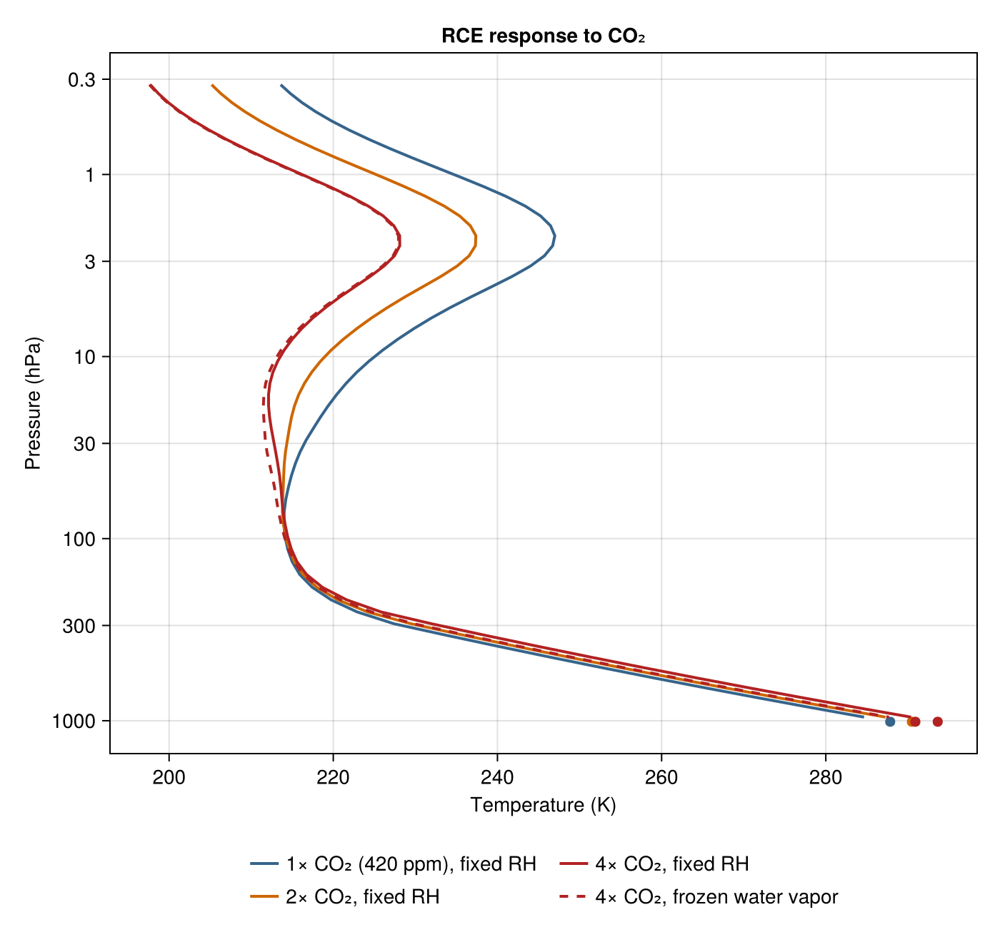
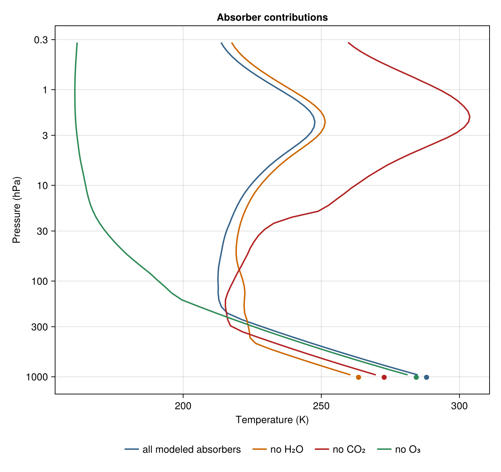

Manabe radiative-convective equilibrium with ecCKD
What surface temperature does an atmospheric column choose, and how much does it warm when CO₂ doubles? Manabe and Wetherald answered those questions in 1967 (J. Atmos. Sci., doi: 10.1175/1520-0469(1967)024<0241:TEOTAW>2.0.CO;2). This page runs a Manabe-style version of that calculation: radiation heats and cools each level, convection instantly clamps the column onto a critical lapse-rate profile anchored at the surface, the surface temperature is solved from top-of-atmosphere energy balance, and — their famous choice — relative humidity stays fixed, so water vapor rises and falls with temperature.
The configuration
The experiment's headline parameters are below. Physical constants, the initial-state prescription, the level marching, the convective clamp, the surface-temperature solve, and the verification gates live in manabe_rce_setup.jl, included below, which defines the rce driver and the verify_equilibria gates.
using NumericalRadiation
using NCDatasets
using Printf
Γ = 6.5e-3 # critical lapse rate, K m⁻¹ (Manabe-Wetherald)
μ₀ = cosd(47.9) # cosine of the solar zenith angle
S₀ = 509 * μ₀ # horizontal TOA shortwave flux, W m⁻²
α = 0.3 # surface albedo
surface_relative_humidity = 0.77 # Manabe-Wetherald humidity profile parameter
water_vapor_floor = 4.8e-6 # stratospheric χH₂O floor, mole fraction
χCH₄ = 1.9e-6 # present-day global means for the
χN₂O = 3.4e-7 # well-mixed trace gases
N = 60 # physical layers, uniform in altitude
zₜ = 60e3 # m; one isothermal lookup-boundary layer above
pₛ = 101_325 # Pa
include("manabe_rce_setup.jl")The experiments, and the answer
Each experiment is a full radiative-convective equilibrium: an inner time-march at fixed trial surface temperature (convective clamp, staged radiation, level tendencies) inside an outer root solve that adjusts the surface temperature until absorbed shortwave balances outgoing longwave. The main experiment runs 1×, 2×, and 4× CO₂ with the fixed-RH closure, plus the discriminating control: 4× CO₂ with water vapor frozen at the control field. Every equilibration must pass the verification gates or this page fails to build.
χCO₂ = 420e-6
control = rce(χCO₂)
doubled = rce(2χCO₂; warm_start = control.Tᵢ)
quadrupled = rce(4χCO₂; warm_start = control.Tᵢ)
frozen_vapor = rce(4χCO₂; warm_start = control.Tᵢ,
fixed_water_vapor = control.χH₂O)
verify_equilibria([("control", control), ("2×", doubled),
("4×", quadrupled), ("4× frozen vapor", frozen_vapor)])
for (name, state) in (("control, 420 ppm CO₂", control),
("2× CO₂, fixed RH", doubled),
("4× CO₂, fixed RH", quadrupled),
("4× CO₂, frozen water vapor", frozen_vapor))
@printf("%-28s Tₛ = %7.2f K ΔTₛ = %+6.2f K\n",
name, state.Tₛ, state.Tₛ - control.Tₛ)
endcontrol, 420 ppm CO₂ Tₛ = 288.09 K ΔTₛ = +0.00 K
2× CO₂, fixed RH Tₛ = 290.72 K ΔTₛ = +2.63 K
4× CO₂, fixed RH Tₛ = 293.85 K ΔTₛ = +5.77 K
4× CO₂, frozen water vapor Tₛ = 291.11 K ΔTₛ = +3.02 K
Comparing the two 4× equilibria isolates the fixed-RH water-vapor amplification in this configuration: the same quadrupled CO₂ warms the surface nearly twice as much when the vapor is allowed to rise with temperature as when it is frozen at the control field.
The solver marches level temperatures; the figures show the derived layer-center profiles, where gas optical properties and heating rates are evaluated, as the current RRTMGP tutorial does.
using CairoMakie
pressure_ticks = ([0.3, 1, 3, 10, 30, 100, 300, 1000],
["0.3", "1", "3", "10", "30", "100", "300", "1000"])
function profile_axis(fig; title)
return Axis(fig[1, 1]; xlabel = "Temperature (K)", ylabel = "Pressure (hPa)",
yscale = log10, yreversed = true,
yticks = pressure_ticks, title)
end
fig = Figure(size = (700, 660))
ax = profile_axis(fig; title = "RCE response to CO₂")
for (state, label, color, style) in
((control, "1× CO₂ (420 ppm), fixed RH", :steelblue4, :solid),
(doubled, "2× CO₂, fixed RH", :darkorange3, :solid),
(quadrupled, "4× CO₂, fixed RH", :firebrick, :solid),
(frozen_vapor, "4× CO₂, frozen water vapor", :firebrick, :dash))
lines!(ax, state.T_ext[2:N_ext], p ./ 100; color, label, linewidth = 2,
linestyle = style)
scatter!(ax, [state.Tₛ], [pₛ / 100]; color, markersize = 10)
end
Legend(fig[2, 1], ax; orientation = :horizontal, nbanks = 2, framevisible = false)
A troposphere on the critical lapse-rate profile anchored at the solved surface temperature (marked at the bottom), a tropopause, and a stratosphere in radiative equilibrium. CO₂ warms the coupled surface-troposphere state while cooling the stratosphere, and the dashed frozen-vapor state shows how much smaller the same 4× forcing leaves the response when vapor cannot rise with temperature.
What each absorber contributes
A companion RCE experiment removes one absorber at a time and re-solves the full equilibrium — water vapor frozen to zero, CO₂ removed, or ozone removed, each through the same solver and gates:
without_H₂O = rce(χCO₂; warm_start = control.Tᵢ,
fixed_water_vapor = zero(control.χH₂O),
Tₛ_guesses = (255, 275))
without_CO₂ = rce(0; warm_start = control.Tᵢ,
Tₛ_guesses = (265, 285))
without_O₃ = rce(χCO₂; warm_start = control.Tᵢ, ozone = zero(χO₃_ext),
Tₛ_guesses = (275, 292))
verify_equilibria([("no H₂O", without_H₂O), ("no CO₂", without_CO₂),
("no O₃", without_O₃)])
for (name, state) in (("without water vapor", without_H₂O),
("without CO₂", without_CO₂),
("without O₃", without_O₃))
@printf("%-28s Tₛ = %7.2f K ΔTₛ = %+6.2f K\n",
name, state.Tₛ, state.Tₛ - control.Tₛ)
end
fig = Figure(size = (700, 660))
ax = profile_axis(fig; title = "Absorber contributions")
for (state, label, color) in
((control, "all modeled absorbers", :steelblue4),
(without_H₂O, "no H₂O", :darkorange3),
(without_CO₂, "no CO₂", :firebrick),
(without_O₃, "no O₃", :seagreen))
lines!(ax, state.T_ext[2:N_ext], p ./ 100; color, label, linewidth = 2)
scatter!(ax, [state.Tₛ], [pₛ / 100]; color, markersize = 10)
end
Legend(fig[2, 1], ax; orientation = :horizontal, framevisible = false)without water vapor Tₛ = 263.47 K ΔTₛ = -24.62 K
without CO₂ Tₛ = 272.75 K ΔTₛ = -15.33 K
without O₃ Tₛ = 284.37 K ΔTₛ = -3.72 K

Three ideas behind the calculation
Radiative equilibrium alone would make each level's temperature settle where its absorption of solar and terrestrial radiation balances its own emission — producing an unstably steep profile in the lower atmosphere. Convective adjustment is the instantaneous limit of the convection that such a profile would trigger: any level colder than the critical profile $T_c(p) = Tₛ (p/pₛ)^{Γ R^{\mathrm{d}}/g}$ anchored at the surface is clamped onto it, so the troposphere rides the critical lapse rate over a radiatively balanced stratosphere while the surface temperature itself is solved from top-of-atmosphere balance. The fixed-RH humidity closure is Manabe and Wetherald's third ingredient: holding relative humidity fixed means a warmer column holds more vapor — itself a greenhouse gas — so any CO₂-driven warming is amplified, which the frozen-vapor control isolates by turning exactly that closure off.
This is a Manabe-style calculation, not a reproduction of Manabe and Wetherald or of any modern rerun: it uses ecCKD correlated-k gas optics, a clear sky, an analytic midlatitude-summer initial state and idealized ozone, prescribed insolation over an α = 0.3 surface, 60 altitude-uniform layers to 60 km, and one isothermal lookup-boundary layer above that supplies the downwelling flux a truncated column would miss. Manabe and Wetherald reported roughly 2–3 K per doubling depending on cloud treatment, and a modern RRTMGP.jl calculation — whose formulation this page follows — reports 2.9 K; the numbers above are outcomes of this configuration. Build-time gates assert inner convergence at every trial surface temperature, final top-of-atmosphere closure, level/layer consistency, the isothermal top, a tropospheric inversion limit, and surface-emission consistency.
This page was generated using Literate.jl.